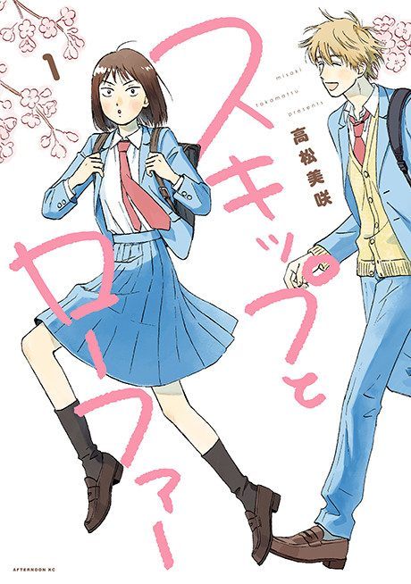

Animeter
← Rankings Anime
Anime
Manga2023 · Comedy, Romance, Slice of Life
Skip and Loafer
スキップとローファー
AniList8.1
Animeter—
Season 112 ep
MangaCh. 24
Key events
These are spoilers. They stay blurred until you reveal them, one at a time or all at once.
First Days in Tokyo Ep 1–4
- Mitsumi is guided to school by laid-back classmate Sousuke Shima and still manages her entrance speech after losing her script.
- She and Shima are made class representatives and she gathers her first circle of friends, including Makoto and Yuzuki.
- A misstep with the drama club hints that Shima has a past as a child actor.
Class Match and Rumors Ep 5–6
- Mitsumi trains with the prickly Mika and slowly wins her over.
- Rumors about Shima's absences cause a rift until he opens up about his home life.
Student Council and Summer Ep 7–9
- Mitsumi becomes council secretary and Shima agrees to a group zoo outing.
- Shima's childhood friend and fellow former actor Ririka confronts him about leaving acting behind.
- Mitsumi spends summer back home and returns with crackers for a downcast Shima.
School Festival Ep 10–12
- Overloaded with work, Mitsumi breaks down and Shima cheers her up with a song and dance.
- The class hunts for Shima's little brother Keiri during the festival.
- Shima's acting past comes out to his classmates and he tells Ririka he wants to move on.